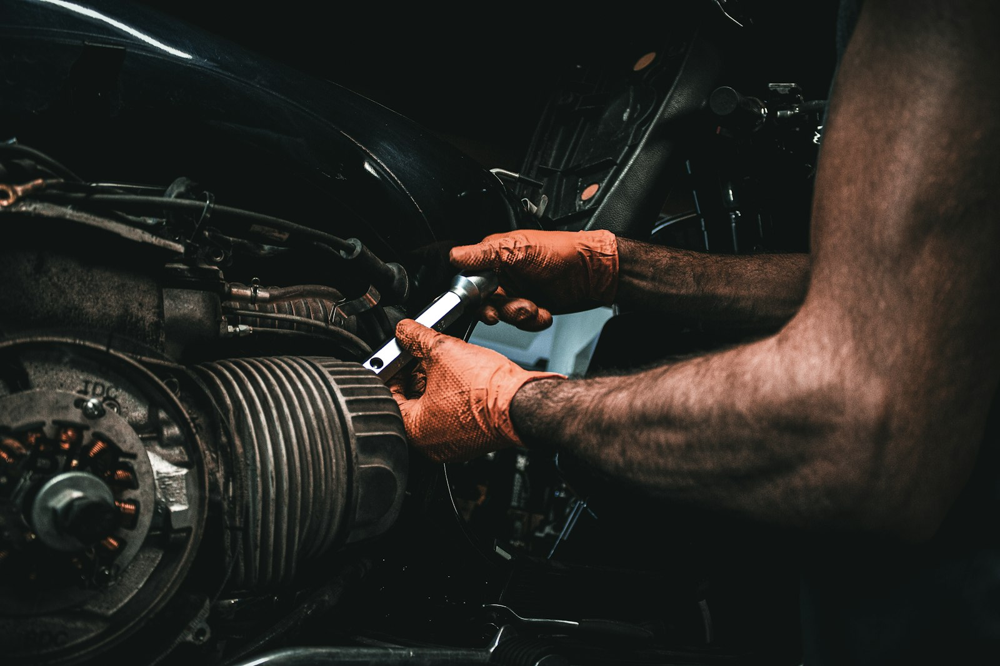
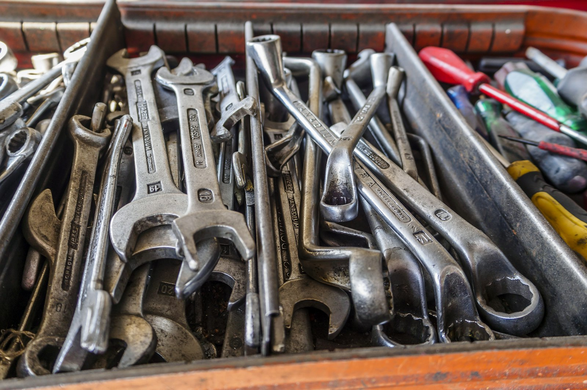
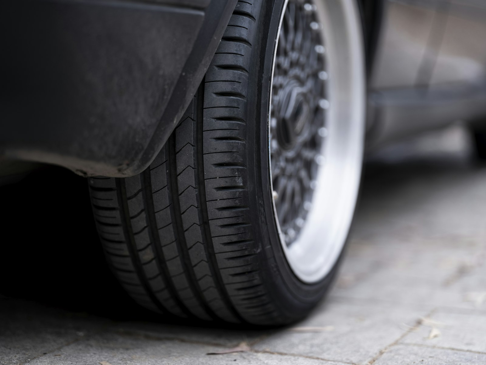
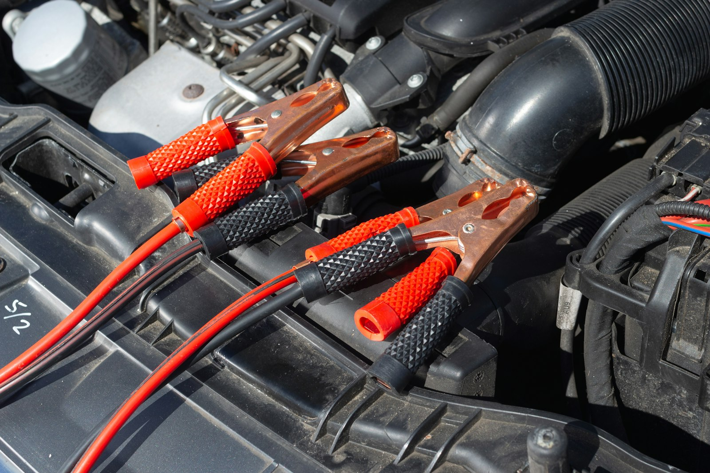

Mobile Mechanic · Queensburgh & Durban
Johnny's Mobile Auto Mechanic brings breakdown call-outs, servicing, diagnostics, brakes and batteries straight to your driveway, workplace or the roadside — across Queensburgh and greater Durban.

about
Johnny's Mobile Auto Mechanic has built a 4.9★ reputation on Facebook and word of mouth around Northdene and Queensburgh, one call-out at a time. This site is the next place that trust lives.
No towing, no waiting at a workshop. We bring the tools to your driveway, office or the roadside.
73 reviews and counting — real feedback from drivers across Queensburgh and greater Durban.
Car trouble doesn't wait for business hours. WhatsApp us to check availability, any time.
our work
From engine bays to roadside battery jumps — the kind of hands-on work Johnny's handles, wherever your car happens to be.



Representative imagery — client photos to follow.
call-out services
coverage
Johnny's Mobile Auto Mechanic is based in Northdene, Queensburgh — and comes to you anywhere across greater Durban for breakdowns, servicing and call-outs.
Home turf — where Johnny's is based.
Regular call-out territory across the Upper Highway.
Greater Durban is big — WhatsApp your location and we'll confirm.
how it works
Tell us what's wrong and where you are.
Johnny arrives with a fully equipped mobile toolkit.
Diagnosis, repair or servicing — done where you're parked.
why mobile
The mechanic comes to your car — not the other way around.
Diagnosis and repair happen together, without a workshop drop-off.
Home, work, or stuck on the roadside — we work where your car already is.
reputation
4.9★
Johnny's reputation has been built on Facebook and word of mouth — real ratings, no paid ads. See it for yourself before you call.
journal
Practical, no-nonsense car care tips for drivers around Queensburgh and greater Durban.
Five things worth checking from behind the wheel before you dial for help.
Some squeals are harmless. Some aren't. Here's how to tell the difference.
A ten-minute check before a long drive out of Durban.
visit
Some imagery is representative stock — client photos to follow.